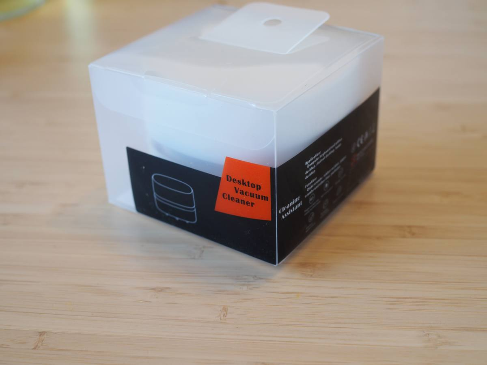
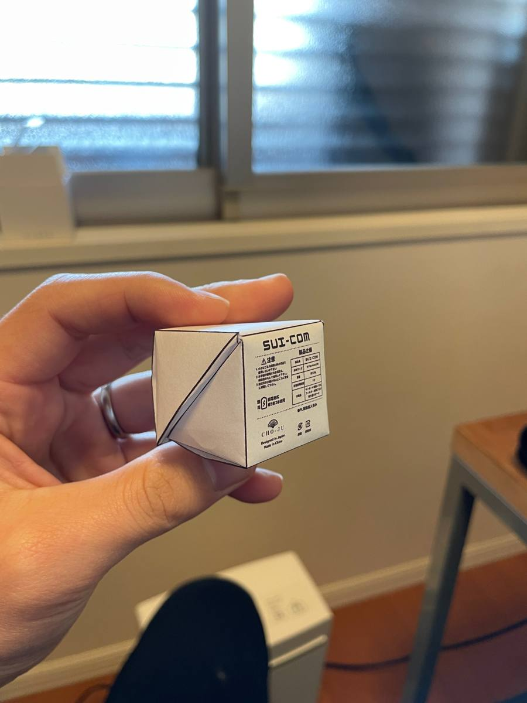
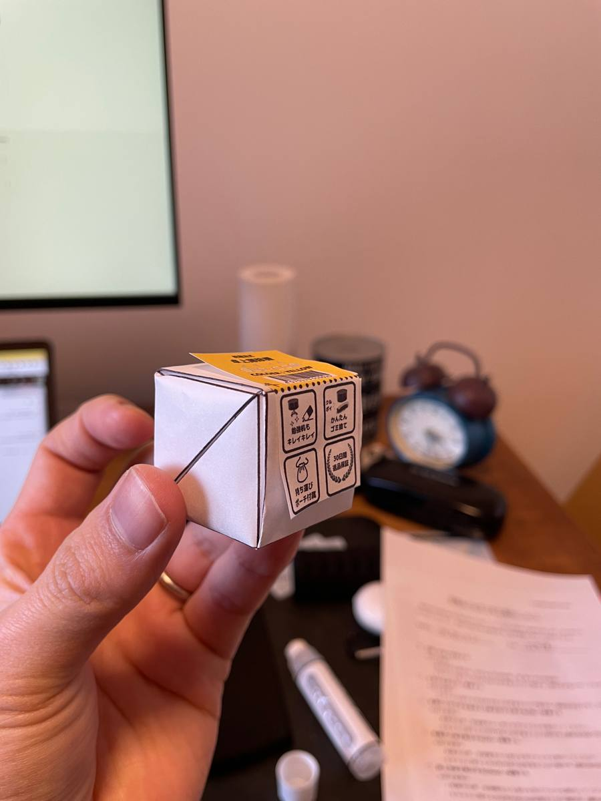
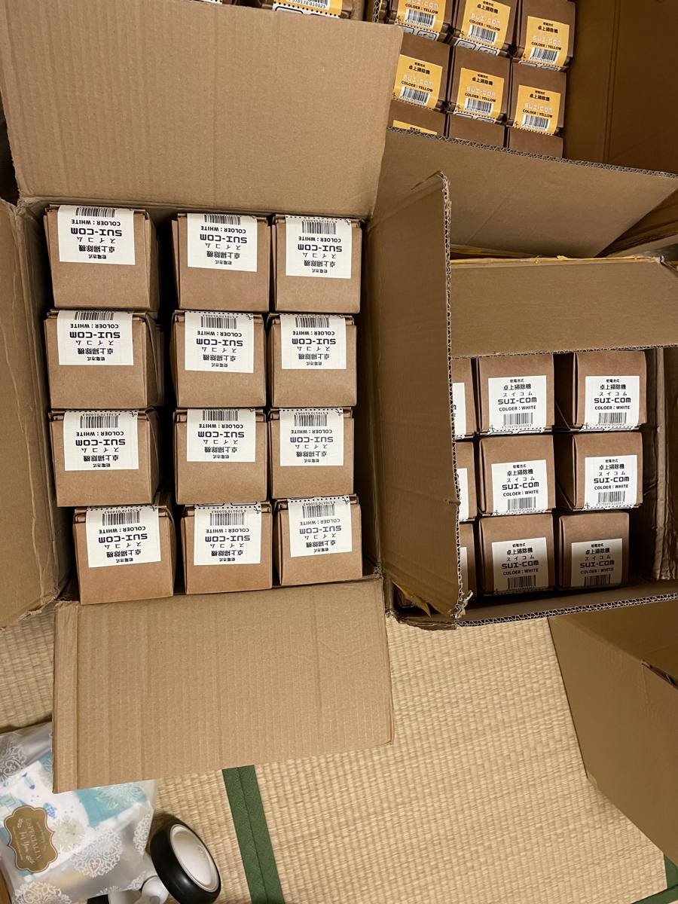
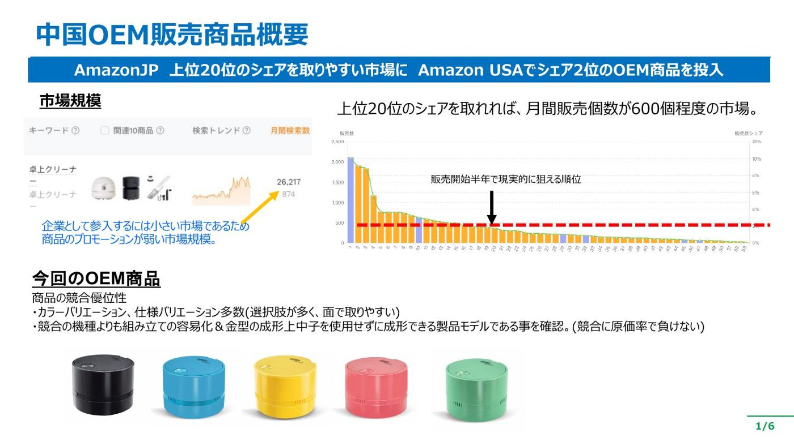
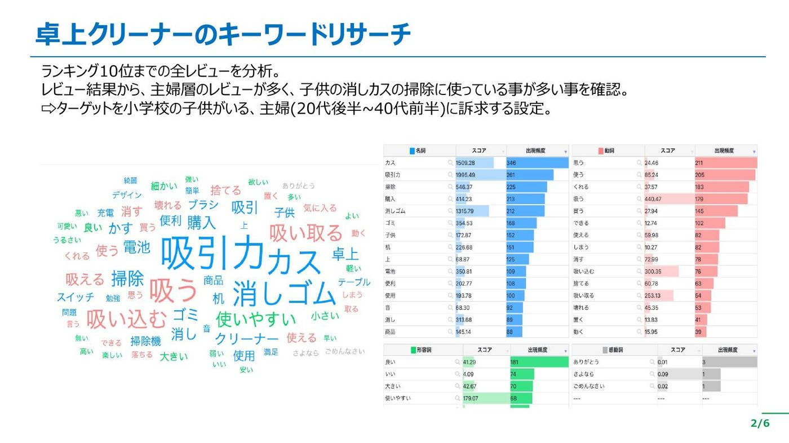
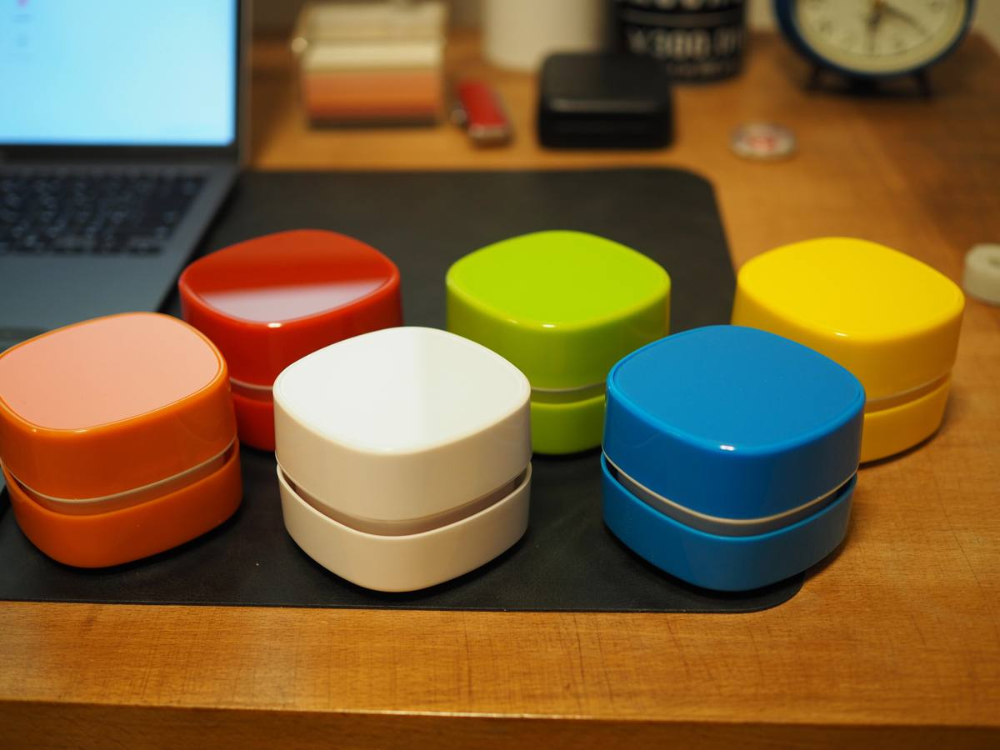
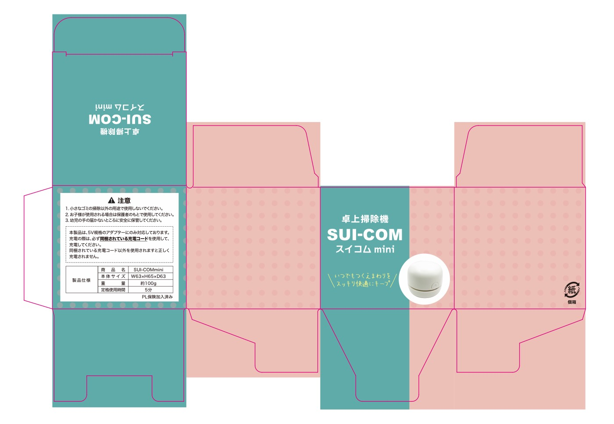
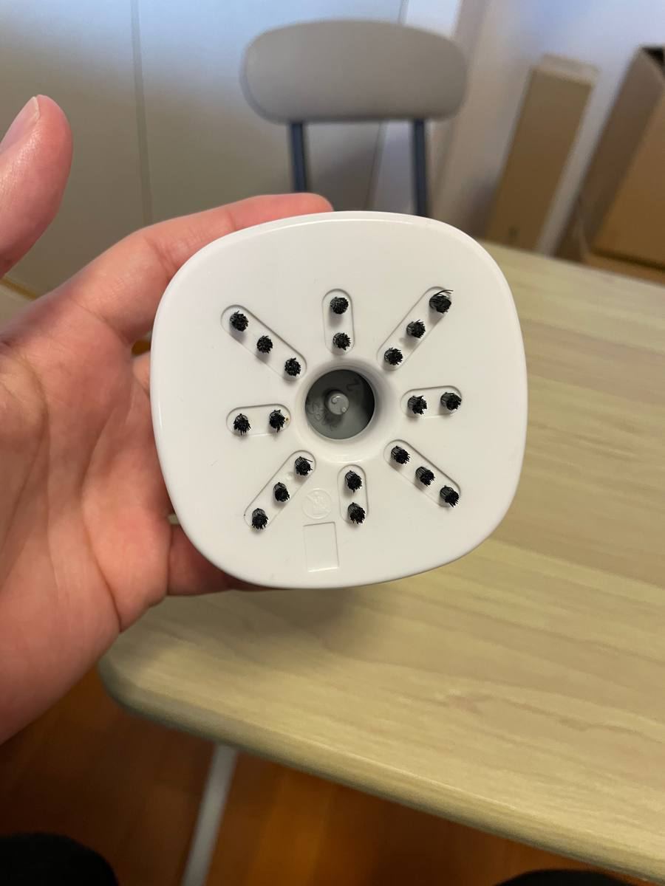

最初の100個は、自宅の机で組んだ ——最小ロットで試して、300個で外注、1000個で工場に任せるまで
業務改善コラム ／ Amazonコラム ／ 読了目安：約9分
卓上そうじ機「スイコム」の最初の100個は、自宅の机で家族と箱に詰めました。独立して1発目の商品で、ここで外したら次が無い。正直、命懸けでした。
工場からは「パッケージを作るなら1000個から。100個なら在庫の透明箱のまま出荷」と言われていて、1000個を先に買うか、100個を自分たちで箱に仕立てるかの二択。私は後者を選びました。
やったことを一言でいうと、売れ方に効く部分だけを手元に残して、効かない部分は先に手放したということです。最小ロット100個から始めて、300個で外注、1000個でやっと工場に全部任せるまで。最後に、同じことを知っていながらやらずに在庫を抱えた失敗も書いておきます。
最初の100個は、自宅の机で組んだ
スイコムは、机の上の消しカスを吸う小さなそうじ機です。今はうちの主力商品のひとつです。売り出す前の1年、調べられることは全部調べました。それでも「売れる保証」だけは、どこにも無かった。
工場の条件はこうでした。専用パッケージや説明書を作れるのは1000個から。100個の注文だと、工場が在庫で持っている英語表記の透明箱に入ったまま届く。日本のお客さまに、そのまま送るわけにはいきません。

それで、商品は中国の工場に最小ロットの100個で発注し、パッケージは自分たちで仕立てることにしました。無地のクラフト箱を中国で安く仕入れ、色などのバリエーションごとの違いは箱に貼るシールで分ける。シールだけラクスルで刷りました。箱の寸法や貼る位置は、先に紙で試作して手に持って確かめています。


届いた箱と商品とシールを、自宅兼事務所の畳の上に並べて、家族と一緒に組み立てて、Amazonの倉庫に送る。それが最初の出荷です。

正直、地味です。夜に畳の上で箱を折りながら「これ社長の仕事か？」と思ったこともあります。笑 でも今振り返ると、この地味な100個が、その後の全部を決めていました。
売り出す前に、調べ尽くした
「100個で試した」と書くと、勘で始めたように聞こえるかもしれません。逆です。会社員をしながら副業でAmazonをやっていた2022年の春、独立の1年前から、この商品の分析だけはやり切っていました。

やったことは、大きく4つです。
- 市場の大きさ：セラースプライト（Amazonの市場調査ツール）で、上位商品の月間販売数を並べました。上位20位に入れば月600個ほど。企業が本気で入るには小さすぎて、その分どの商品もページ作りが弱い。個人でも面で取れる、と判断しました。詳しくは隙間市場の選び方に書いています
- お客さまの言葉：上位10商品のレビューを全部読み込んで、出てくる言葉の回数を数えました。多かったのは「吸引力」「消しカス」「子供」。買っているのは主婦の方で、使っているのはお子さんの勉強机。ターゲットは「小学生の子どもがいる、20代後半から40代前半の主婦」と決めました
- 原価で負けない形か：前職が生産技術だったので、金型の目で見ました。競合より組み立てが簡単で、金型に中子（なかご：型の内側に入れる部品。要るほど型代と不良が増える）が要らない形。つまり原価で負けない。ここは自分の経験がそのまま効いた部分です
- 構造で勝てるか：競合のフィルターが側面にあり、ゴミがファンに絡んで掃除しにくいことを分解して確認。中心にフィルターがある方式との違いを、商品ページの図解にしました

商品画像7枚の構成も、商品ページ下の説明欄（A+コンテンツ）も、この時点で設計図まで作っています。ここまでやって、それでも分からなかったのが「どの色が売れるか」と「この表記でちゃんと伝わるか」でした。分析は「売れる根拠」は作ってくれますが、「売れる保証」は作ってくれない。だから、最後は100個で市場に聞くことにしました。
ちなみに、当時はこの分析に調査ツールを何本も使い分けて、レビューを読み込むだけで何日もかけていました。今はAIに任せられる部分が大きく、同じ深さの分析が、当時とは比べものにならない速さでできます。やることは変わっていませんが、かかる時間は桁で減りました。
売れ方に効くものだけ、手元に置いた
工場に頼めば、箱も梱包も全部やってくれます。ただし、そのためにはパッケージの最低ロットがあり、うちの場合は1000個単位でした。売れるか分からない商品のために、1000個分の箱を先に刷る。これは「商品が売れなかった」だけでなく「デザインを変えたくなった」だけでも全部ムダになります。
そこで、工程をひとつずつ「売れ方に効くかどうか」で仕分けました。Amazonで言えば、効くのはクリック率と成約率に直結するものです。商品画像で目に入る見た目、どの色を主役にするか、箱に書く売りの文言。ここが変わると、売れる数が変わります。
逆に、売れ方にほとんど効かないものもあります。取扱説明書の体裁や、商品本体の仕様です。大事な要素ではありますが、ここを1回直したところで注文が増えるわけではありません。だから最初にさっさと決めて、工場に渡してしまう。悩む時間がもったいない。
| 売れ方への影響 | もの | どうしたか |
|---|---|---|
| 大きい | パッケージの見た目、色の展開、箱に貼る訴求の文言、商品画像 | 手元に置いて、何度でも変えられるようにした |
| 小さい | 取扱説明書、商品本体の仕様 | 早めに決めて工場に任せた |
実際、シールは何度も直しました。売りの文言を入れ替えたり、絵を描き直したり。手元にシールがあるうちは、印刷に出し直すだけで済みます。取扱説明書のほうは、最初に決めた内容のまま今も変えていません。

まとめると、リスクを抑えて最短で回すなら、売れ方に効く部分ほど手元に置き、効かない部分ほど早く手放す。全部自分でやるのでも、全部任せるのでもありません。この線の引き方が、そのまま初期費用と、試せる回数を決めます。
100個 → 300個 → 1000個で、手放す順番
売れ方が見えてきたら、手元の作業を少しずつ外に出しました。順番はこうです。
| 1回の発注数 | 箱の組み立て・出荷準備 | この段階でやっていたこと |
|---|---|---|
| 100個 | 自宅で家族と（箱は無地＋ラクスルのシール） | 売れるか、どの色が動くか、表記に直しが要るかを見る |
| 300個くらい | 就労支援施設に外注（シールはラクスルから中国の印刷工場に切り替え） | 売れ方が安定してきたので、作業の手順を書き起こして人に渡せる形に。シールの単価も下げる |
| 1000個超 | 工場が全部 | パッケージの最低ロットに届いたので、箱も梱包も工場側の工程に |
300個の段階では、まだパッケージの1000個には届きません。そこでシールだけ先に中国の印刷工場に切り替えて単価を下げ、そのシールを箱に貼る作業を就労支援施設にお願いしました。作業を人に渡すには手順を書き起こす必要があり、これが結果的に「仕組み化」になりました。自分たちだけでやっていた頃は、手順が全部私の頭の中にあった。書き出してみると、抜けや曖昧なところが結構ある。笑
そして1回の発注が1000個を超えたところで、ようやくパッケージの最低ロットに届き、工場が箱の製作から梱包まで全部やってくれる段階になりました。手放したのは、手放しても崩れない状態になってから。順番はそれだけです。

知っていながらやらなかった「スイコムプラス」の話
ここまで書いておいて何ですが、同じことを知っていながらやらなかった商品があります。ハンディークリーナーの「スイコムプラス」です。
スイコムが伸びていたので、「次はこれやろ」と最初から本番の数量で発注しました。100個で試す工程を飛ばした。結果は、思ったほど売れず、在庫を売り切ってから販売をやめました。要するに爆死です。
前の商品がうまくいっていたので「これも行ける」と思い込んだこと。そして、100個で試す工程が地味で面倒なのを知っていたので、省きたかったこと。この2つです。
型を知っていることと、毎回それをやることは別やと、身をもって覚えました。うまくいった直後がいちばん危ない、というのは本当だと思ってます。
手で触ったから分かったこと
100個を売ってみて、いちばん大きかった発見は白だけが他の色の数倍のはやさで売れていったことでした。それまでは黄色や緑も同じくらい動くと思っていた。この商品の主役は白や、と100個で分かった。その後のパッケージも、商品説明も、商品画像も、全部「白が主役」で組み立て直しています。もし最初から1000個を色ごとに刷っていたら、この発見のたびに箱がムダになっていました。

コストを抑えられたこと以上に、商品を自分が一番よく知っている状態になれたのが大きかった。箱を折るたびに、どこが弱いか、どの表記が分かりにくいか、どの色が先になくなるかが手で分かる。
私が今も守っているのは、次の3つです。
- 売れ方に効くものほど手元に、効かないものほど早く手放す。見た目・色の展開・訴求の文言は自分で変えられる状態に。取扱説明書や本体仕様は最初に決めて工場へ。工場が「1000個から」と言っても、100個を自分で仕立てる道はある
- 数量が安定してから、作業を外に出す。出すときに手順を書き起こすので、それ自体が仕組みになる
- うまくいった直後ほど、同じ手順を省かない。スイコムプラスで一度やらかしているので、これは自戒です
この型は、Amazonで自社商品を出す方ならそのまま使えると思ってます。最初の100個を自分で触るのは面倒ですが、その面倒が、あとで一番効いてきます。
「最初の数量、どれくらいで試すか」で迷っていたら
商品の種類と、どこまで自分で触れるかを聞けば、最小ロットで試す組み立てはだいたい一緒に考えられます。同じことで迷っている方がいたら、LINEで話しましょう。売り込みはしません。
LINEで相談するあわせて読みたい